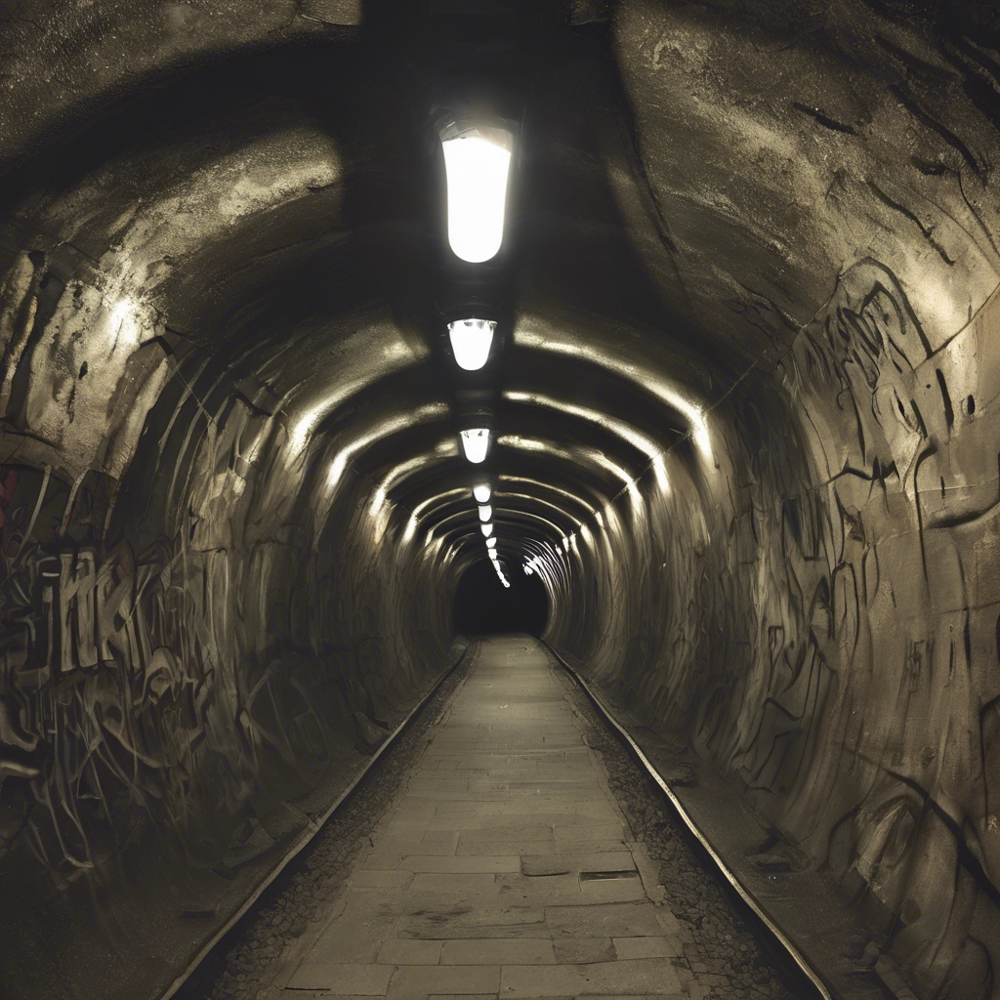

Haladni a fény felé, és felfedezni az alagutak mélyén rejlő titkokat  Előröl!
Előröl!
Benedek úgy döntött, hogy vállalja a kockázatot, és elindult a halvány fény irányába. Ahogy közeledett, egy masszív fémajtót látott, amelynek résein keresztül halvány kék fény szűrődött ki. A falakon régi propagandaplakátok lógtak, az ajtóra pedig vörös festékkel egy üzenet volt felfestve: "Aki belép, nem jön ki többé."
Egy pillanatra megtorpant. Lehet, hogy az ajtó mögött valami fontos információ rejlik – de mi van, ha csapda? Döntése előtt két út maradt:
15-Kinyitja az ajtót, és belép a titokzatos helyre. 16-Visszafordul, és keres egy másik utat.
